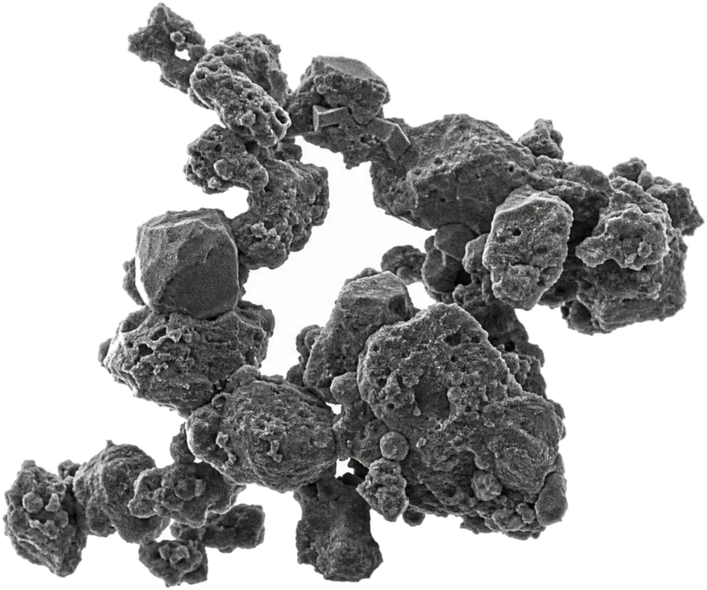
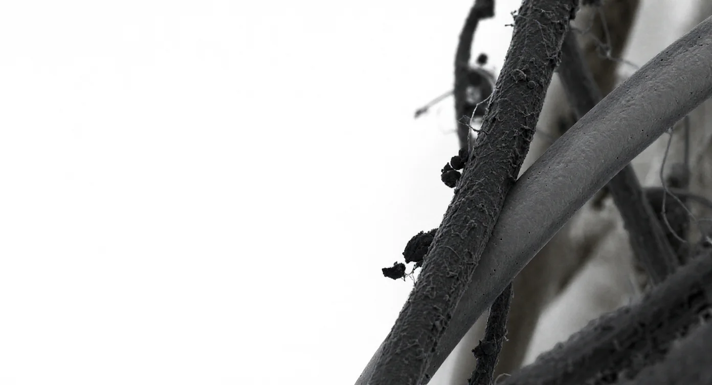

The microbes and smoke in the air, the PFAS in water, the biofilm on a surface — completely different problems that mostly share one trait: a negative charge.
NanoFlashing™ is a patented permanent positive polarity (3P) technology, engineered into the material. It attracts and captures ultrafine particles, wildfire smoke, PFAS, and pollen through a physical mechanism.
Installed in 441 facilities across 7 countries since 2020. The same material carries into water, protective wear, food packaging and medical devices.